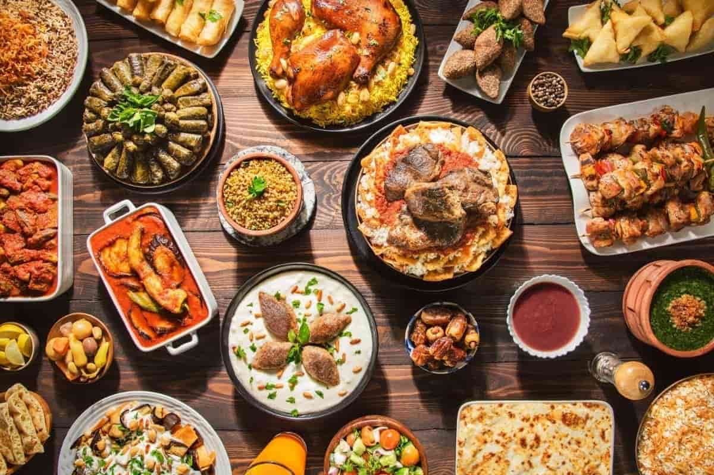
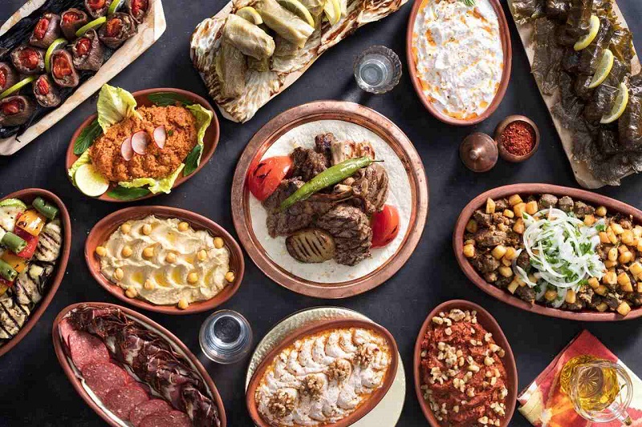

Turkish Cuisine Culture and Special Features
Cultural Significance of Food
In Turkish culture, food is more than sustenance; it’s a way to bond and celebrate.
Hospitality: Offering food and drink is a fundamental part of Turkish hospitality. Guests are welcomed with a generous spread of dishes, even for impromptu visits.
Festive Celebrations: Meals play a central role in festivals, weddings, and religious occasions like Ramadan, where traditional dishes like pide and güllaç are prepared.
Community and Shared Dining
Sharing food is a cornerstone of Turkish dining culture.
Meze Culture: Small, flavorful dishes like haydari (yogurt dip) and patlıcan ezmesi (mashed eggplant) are shared at gatherings.
Sofra Tradition: Family and friends gather around a table (sofra) to enjoy leisurely meals, often accompanied by lively conversation.
Key Ingredients and Techniques
Turkish cuisine emphasizes the use of fresh, natural ingredients and time-honored cooking techniques.
Core Ingredients: Olive oil, yogurt, eggplant, lamb, bulgur, and spices like sumac and cumin.
Traditional Techniques:Slow cooking in clay pots, grilling over charcoal, and baking bread in stone ovens.
Special Features of Turkish Cuisine
Diverse Regional Flavors: Each region boasts its own culinary identity:
Aegean CuisineLight, olive-oil-based dishes with fresh herbs.
Southeast Anatolia:Spicy kebabs, rich desserts like baklava, and lentil soups.
Black Sea Cuisine:Cornbread, anchovies (hamsi), and dishes featuring hazelnuts.
Ottoman Heritage:Dishes like hünkar beğendi (lamb with eggplant puree) showcase the opulence of Ottoman palace cuisine.
Beverage Culture: Turkish tea (çay) and coffee (Türk kahvesi) are integral to daily life, symbolizing friendship and hospitality.
Seasonality and Sustainability
Turkish cuisine celebrates the seasons, with dishes crafted around what is fresh and local.
Seasonal fruits like cherries and apricots inspire desserts, while winter calls for hearty stews and soups.
Local bazaars play a pivotal role in connecting communities with fresh produce.